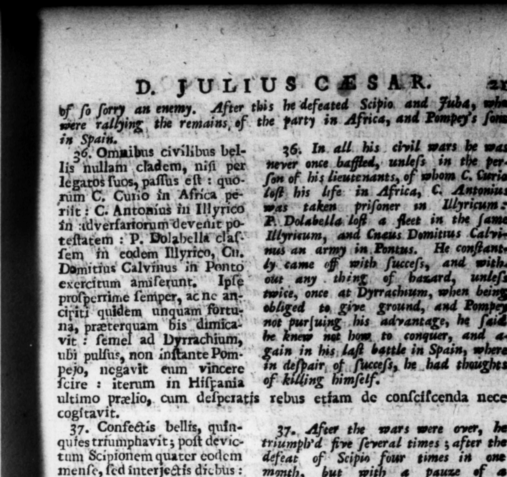

1 £ — 5 ſorry an enemy. After this he defeated © Scipio. Fuba, of 4.8.8 a of. the party in Africa, and Pompey's in Spain. pt | 36. Omnibus civilibus bellis nullam cladem, niſi per legatos ſuos, paſſus eſt: quoim C. Curio in Africa peTiit : C. Antonius in Ill yrieo, in :WverfartorumUevenrt poteſtatem: P. Dolabella cla. ſem in eodem Illyrico, Ou. Domitius Calvinus in Pont e 1 Ipſe ſperrime ſemper, ac nc an}. . quidem 9 fortu: na, præterquam bis dimicavit : ſemel ad Dyrrachium, ubi pulſas, non inſtante Pom- $ wha , fora olet any . th twice, once at 4 | ejo, negavit eum vincere *# 1 iſs, be . | dire : — in Hiſpania of mſelf. i ultimo prælio, cum deſpcratis rebus etiam de conſcifcenda nece | cogſitavit, | 37. Confectis bellis, quin- 27, Affeer the wars were over, he qufestriumphavat; fl devic- triumplyd five ſeveral times ; after the tum ie quarter codem defeat of © Scipio four times in one menſe, fed interjectis dichus: moth, but with 4 pauze of a & rurſus ſemel poſt ſuperatus few days betwixt every two tri Pompeu liberos. Primum & and once again after the conque excefenciMittinn triumphum Pompey's ſons, The firſt and moſt gl. egir Gallicum, * rieus triumph was fot his victory ob. cxandrinum, de inde Ponti- rained againſs the Gauls. The nexs cum, hutc progimern Atri- for that of Alexandria, the third for canum, noviſkhmum Hiſpani- the reduction of Pontus, the fourth for enſem, diverſo quemque ap- bis African W, and the er paratu & inſtrumento, Gal- that in Spain, different from one ici triumpht die Velabram anther in their furniture and pomp. prætervehens pœnę curru ex- On the of the Gallick triumph, as cuſſus eſt, axe diffracto: ad- be was riding along the ftreet call'd ſcenditque Capitolium ad lu- Alabrum, be bad lite to have bees mina, quadraginta N thrown out of his chariot by the breakdextra atque ſinſtra lychnu- ing of the axle-tree, and mounted the chos geſtantilus, Pontico capital by torch-light, forty elephants triumpho inter pompæ fer- carrying flambeaus on the right and cula trium verborum praetus Left of um. Amongſt the other page lit titulum, FENI, YVIDI, antry of the Pontick triumph, this inIc I non acta belli ſigniti- ſcription was carried before him, I came, cantem, ſicut cæteri, ſed ce- ſaw, and overcame not ſignifying, as leriter confecti notam. other mottos on the like occaſion, was done, ſo much as the diſpatch with which it was done. 38. Veteranis legionibus 38. To every footman in his veteran przede nominæ in pedites ſin- legions, beſides the two thouſand ſefter. gulosſuper bina ſeſtertia quæ ces pad them in the beginnin the inĩtio civilis tumultus nume - gy; war, he gave twenty thouſa Taverat, Vicena millia num- gre, under the name of 2 — mum dedit; aflignavit & Aged them dands $00, bug wot bet her,
